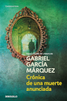

Sobre mi
Información personal
Nombre y apellidos
Pablo Valdés Fernández
UO
UO282655
Correo electrónico
UO282655@uniovi.es
Texto de presentación
Me llamo Pablo Valdés Fernández, tengo 20 años y estoy estudiando Ingeniería Informática del Software en la Universidad de Oviedo
Mis aficiones
-
Literatura

-
Cine
- Pasear
- Videojuegos
- Juegos de mesa
Mis grupos y cantantes favoritos
-
The Smiths
-
This Charming Man
- How Soon Is Now
- There Is A Light That Never Goes Out
- What Difference Does It Make
- Please, Please, Please Let Me Get What I Want
-
Black Sabbath
-
King Crimson
- ABBA
- Kate Bush
- King Crimson
- David Bowie
Mis asignaturas favoritas
- Autómatas y Matemáticas Discretas
- Me pareció una asignatura con un contenido muy interesante
- Sistemas Operativos
- Las prácticas de laboratorio fueron muy útiles a la hora de ayudarme a entender el funcionamiento interno de un sistema operativo
- Tecnología y Paradigmas de Programación
- Aprendí técnicas de programación muy útiles
- Seguridad de Sistemas Informáticos
- El contenido era muy interesante y los profesores tenían mucha habilidad a la hora de explicarlo
- Estructuras de Datos
- Lo que aprendí en esta asignatura me ha sido muy útil a lo largo de toda la carrera
Temperaturas medias anuales
Las temperaturas medias anuales en Oviedo en los últimos 10 años
| 2022 |
2021 |
2020 |
2019 |
2018 |
2017 |
2016 |
2015 |
2014 |
2013 |
| 14.0 |
13.0 |
13.8 |
13.2 |
13.1 |
13.3 |
13.2 |
13.4 |
13.5 |
12.3 |